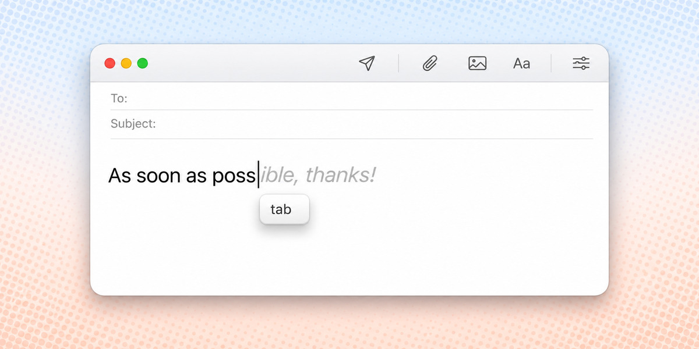
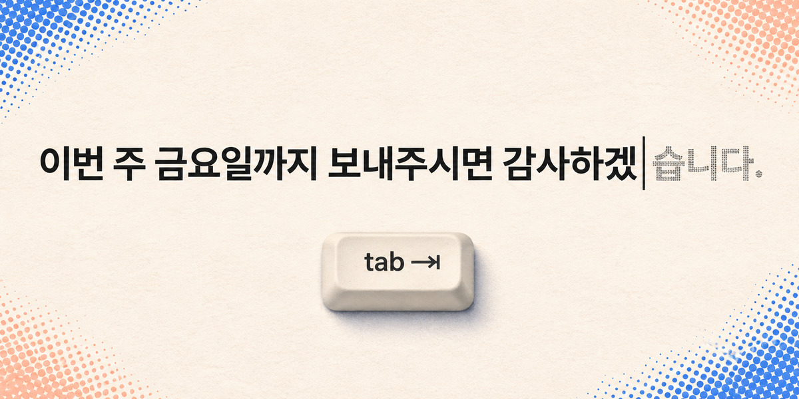
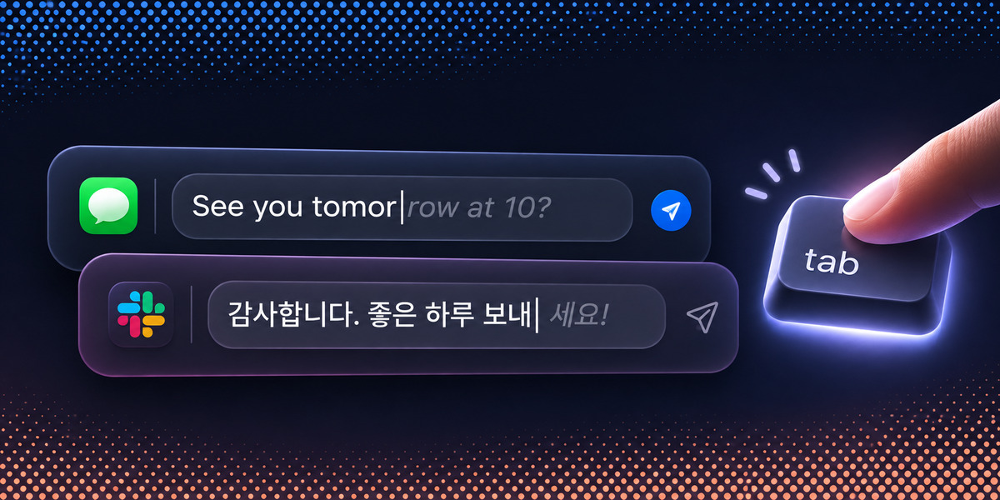

README demo: options
Deciding how the README shows Halftype at work. John: "this part doesn't look good; look at competitors and get some ideas for how to make this nice looking and polished, even if we have to add 'Tab' icons or animations".
The white box from the README now: no frame and no sign of a key press, and it glares in GitHub's dark theme.
The app's own sky behind a plain compose window; the keycap dips on each Tab. Costs: a frame and a keycap drawn around today's frames. It reads on dark and light themes alike.
Cotabby's trick: a small pill after the grey text that fills in as Tab takes it. Small and honest; it teaches the key without any chrome. Plain on its own, strong as a hint inside B.
Poster-like: one large line and the key. The best-looking at small sizes, but it shows no app, so it says less about "in almost any app".
English and Korean in one picture instead of two GIFs, in two generic message fields. One image to keep up to date; no real app logos, which we may not use.
B's idea, plus the count the README's numbers are about: keys you pressed against letters Tab filled in. Makes "saves 21.6% of keystrokes" visible. More to explain; the count per sentence is real, from the same run.
Image ideas (from Codex's image tool, not builds)

Close to B. Worth taking: the keycap tucked right under the caret, so the eye goes from the grey text straight to the key.

Worth taking: the suggestion drawn in halftone dots, as if half-printed: the name, made visible. It could be the grey text's look in D.

Worth taking: E's two-language stack on the app's dark sky, for GitHub's dark theme. The finger and the app logos are too much, and the logos aren't ours to use.